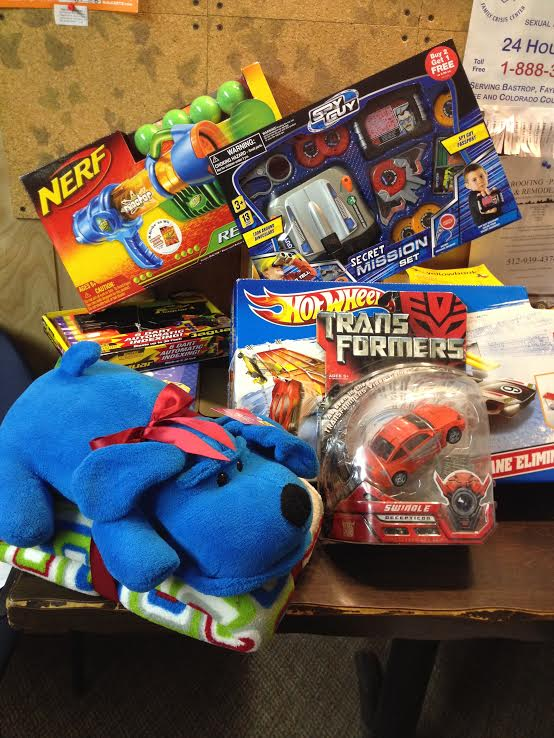
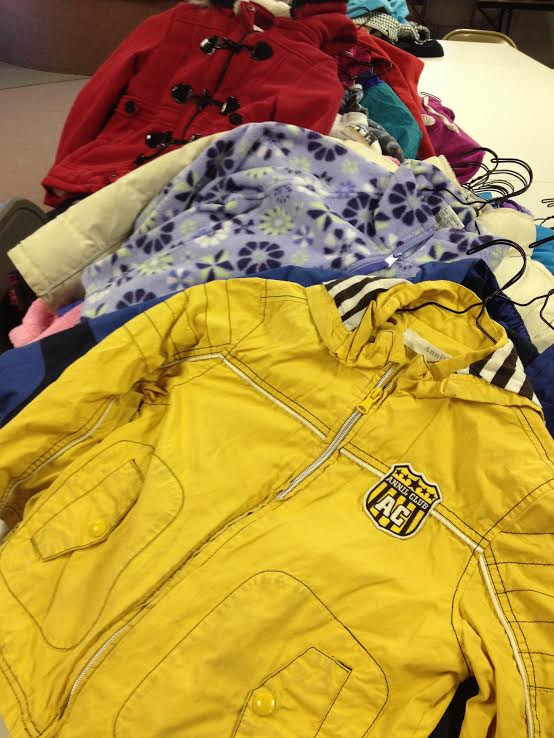

Advocacy Outreach
200 Depot Street,
P. O. Box 169, Elgin,
Texas 78621
Phone 512 281-4180
FAX 512 281-9599
Through the Wonderful Generosity of our Community, Advocacy Outreach was able assist many families during this Christmas season!
Annual Christmas program 2013
Our annual Christmas program this year raised enough donations in order to assist 15 families. They each received gift cards so they could buy Christmas gifts for their children and food for their family.
Our ability to assist during the Christmas season comes from the generous gifts of many people and businesses in our community. Each year this amount varies so that not everyone who applies gets to receive.
Advocacy Outreach appreciates everyone who contributed this year to make this program work! We also appreciate the work that Pasty Hoffman puts in to organizing, collecting and distributing the Christmas Gift cards!
We also gave out several Christmas baskets of foods to qualifying families, through our own funds.
Region 13 gave us gift baskets for our Family Literacy parents with items needed for the home this year.Elign High School Students Give

Mr. Bob Haisler, a teacher at Elgin High School, came by our office with bags full of toys his students collected. They had heard we had so many people waiting outside our building to be part of our Christmas program and that many were turned away.
Mr. Haisler came up with the idea for his students to gather Christmas gifts and toys to give to some of those who still need some Christmas gifts for their children. He came by our office with bags of new toys for our annual Christmas Program that will help several families! Thank you!
Coats for Kids

This year we received about 500 gently used winter coats from Coats for Kids, distributed through Region 13. Coats for Kids gathers new and gently used coats from Austinites for their annual drive. These coats were placed in our Free Thrift Store and people in need cleared them out in two days.
Thank you!
It is through the heart felt actions and donations of our Community that Advocacy Outreach can distribute help to those in need! Thank you all for your praticipation! It takes a community!